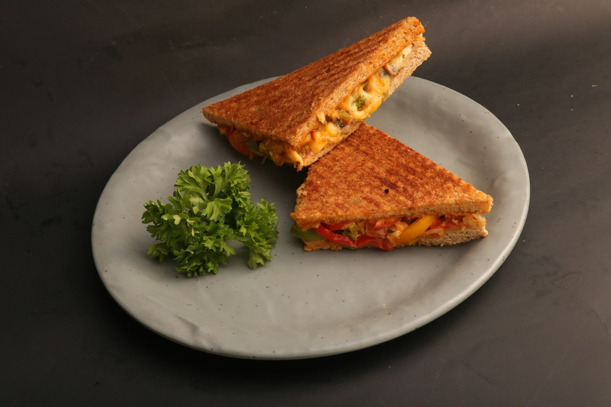

Home
Corn Sandwich

A corn sandwich is a toasted sandwich filled with sweet corn, cheese, and bell peppers, grilled in buttered bread until crisp and golden.
Ingredients
- Bread
- Corn
- Cheese
- Butter
- Bell pepper
Steps
- In a bowl, mix the sweet corn, cheese and bell peppers.
- Spread softened butter on the outside of each slice of bread.
- Spread the corn mixture on one slice of bread, then cover with the other slice.
- Cook on a pan over medium heat, pressing lightly, until both sides are golden brown and crispy.